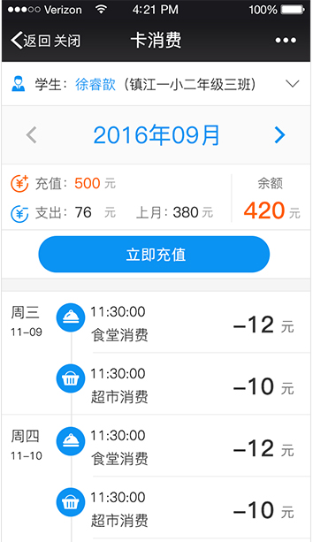

<!-- 
        作者：chenxuan
        时间：2016-1-3
        描述：应用详情
-->
<!DOCTYPE html >
<html lang="zh-CN">

	<head>
		<meta charset="utf-8">
		<meta name="viewport" content="width=device-width, initial-scale=1,maximum-scale=1,user-scalable=no">
		<script>
			//这是属于老版的缓存控制方案,后续的自定构建解决缓存也兼容这种模式,所以写法没问题
			document.write("<script type='text/javascript' src='../../js/core/RayApp/cacheControl.config.js?" + Math.random() + "'></scr" + "ipt>");
		</script>
		<script>
			//支持项目相对路径和绝对路径
			SrcBoot.output([
				'../../css/mui.min.css',
				'../../css/common/common.css',
				'../../css/css-application/application-detail.css'
			]);
		</script>
	</head>

	<body>
		<!-- 标题 -->
		<!--<header id="header" class="mui-bar mui-bar-nav ">
			<a class="mui-action-back mui-icon mui-icon-left-nav mui-pull-left"></a>
			<h1 id="title" class="mui-title">应用详情</h1>
		</header>-->
		<div class="mui-content">
			<!--应用-->
			<div id="" class="mui-scroll-wrapper">
				<div class="mui-scroll" id="application-detail">
					<!--<div class="application-head mui-clearfix">
						<div class="appli-img">
							
						</div>
						<div class="left-appli">
							<p class="appli-name">微家校</p>
							<ul class="mui-clearfix">
								<li class="cur"></li>
								<li class="cur"></li>
								<li></li>
								<li></li>
								<li></li>
							</ul>
						</div>
						<div class="right-use">
							<button type="button" class="mui-btn">立即使用</button>
						</div>
					</div>
					<div class="">
						
					</div>-->
					<!--<div style="padding: 10px 10px;background-color: #fafafa;border-bottom: 1px solid #d9d9d9;">
						<div id="segmentedControl" class="mui-segmented-control">
							<a class="mui-control-item mui-active" href="#item1">简介</a>
							<a class="mui-control-item" href="#item2">图片</a>
						</div>
					</div>
					<div>
						<div id="item1" class="mui-control-content mui-active">

							<ul class="mui-table-view">
								<li class="mui-table-view-cell">
									
									<div class="info">
										<p class="title">产品介绍</p>
										<p class="detail">为了加强学校、老师和家长之间的沟通交流，退出微信端微家校。</p>
									</div>
								</li>
								<li class="mui-table-view-cell" style="background-color:#fafafa;">
									
									<div class="info">
										<p class="title">产品资费</p>
										<p class="detail">基础功能免费，部分应用需要购买</p>
									</div>
								</li>
								<li class="mui-table-view-cell">
									
									<div class="info">
										<p class="title">业务办理流程</p>
										<p class="detail">扫描关注镇江微家校企业号进行关注，关注成功后即可使用。</p>
									</div>
								</li>
								<li class="mui-table-view-cell" style="background-color:#fafafa;">
									
									<div class="info">
										<p class="title">目标客户群</p>
										<p class="detail">家长、老师</p>
									</div>
								</li>
							</ul>
						</div>
						<div id="item2" class="mui-control-content">
							<h4 class="img-head">微信平台</h4>
							<div id="sliderSegmentedControl" class="mui-scroll-wrapper mui-slider-indicator mui-segmented-control mui-segmented-control-inverted">
								<div class="mui-scroll">
									
									
									
									
									
								</div>
							</div>
						</div>
					</div>-->
				</div>
			</div>
	</body>
	<!-- 通用seajs配置 -->
	<script>
		//将需要的配置文件进行封装函数,可以省去重复代码
		//所有的seajs别名或者项目中bizlogic文件夹下的js都需要在seaBizConfig.js中设置别名,通过别名引用
		//实际项目中请删除这些注释
		SrcBoot.outSeaConfig();
	</script>
	<script>
		seajs.use('../../js/bizlogic/bizlogic-application/application-detail.js');
	</script>

</html>